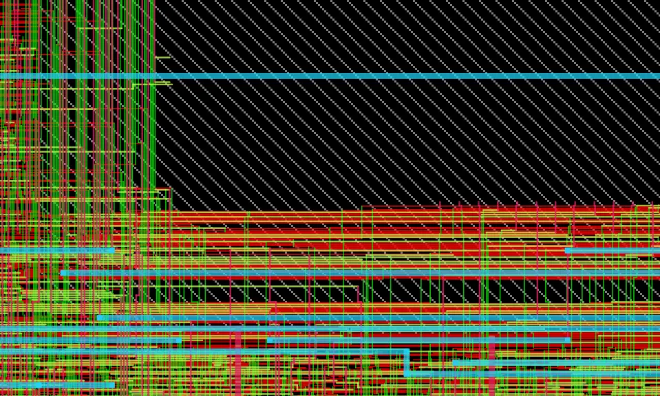
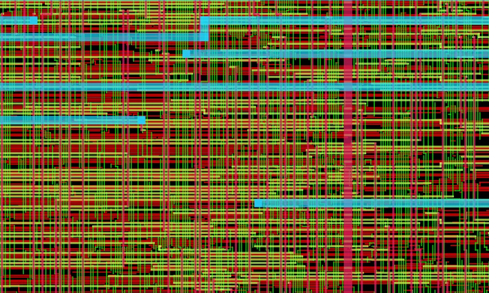

Case study · Independent chip design · Jan – Aug 2026
IVCU-EV V4
A dual-mode electric-vehicle safety SoC — one chip that runs a car or a motorcycle — taken from RTL to a DRC-clean routed layout on SkyWater 130 nm, using only open-source tools.

- 41Verilog modules
- 55,381placed instances
- 61%core utilisation
- 0routing DRC violations
①
Idea
After a crash, an electric vehicle's battery pack can still be live — dangerous for the people inside and for whoever comes to help. I wanted a controller whose first job is to make the vehicle safe to touch.
So the whole chip is designed around one requirement: cut high voltage within the first 50 ms of a crash. Around that, it does four more jobs, in priority order:
- High-voltage isolation on impact — the first job, above everything else.
- Emergency call — a GPS SOS frame, routed by how severe the crash was.
- Honest sensor health — every one of 64 channels reports why it is unhealthy: out of range, stuck, dead, implausible, or correctly switched off for this vehicle.
- A counted service permit — a limited number of starts after a fault, so the vehicle can reach a workshop.
- Repair classification — a hard-wired answer, per channel, to "who may fix this?"
Two vehicles, one die
The same silicon runs as a car or a motorcycle. It works out which at power-on, from a bonded strap plus the pattern of sensors it sees, and keeps the drivetrain off until the mode is proven. A car uses 62 of the 64 sensor channels; a motorcycle uses 48.
A safety island nobody can talk out of its job
The high-voltage control sits in its own power domain with no enable pin, so no sleep state can switch it off. It is reset only by power-on, so a software reset cannot clear a "contactor welded" fact. And the crash disconnect is plain combinational logic on the outputs, outside any state machine: no processor write and no AI block can command high voltage on.
The 50 ms figure is the design requirement. The chip has not been simulated yet (see ⑤ Next), so this page never claims it was measured.
②
Plan
Four clock domains, chosen for safety rather than speed — the safety island runs on the slowest clock, because that is where the timing margin is.
| Clock | Frequency | What it runs |
|---|---|---|
clk_aon | 10 MHz | Always-on safety island, mode manager, service permit, HV control |
clk_sensor | 25 MHz | 64-channel ADC scan, conditioning, plausibility and fault checks |
clk_ai | 50 MHz | Seven-block health-scoring cluster |
clk_mcu | 50 MHz | APB register file, fault logger + SRAM, service guidance |
Every signal that crosses between domains goes through a synchroniser, and the scorer has no divider and no multiplier: weights are powers of two, so weighting is a shift. A 512 × 32 OpenRAM SRAM holds a 512-entry circular fault log.
The flow
- Verilog-200141 modules + header
- Yosys + ABCgate-level netlist
- OpenSTAconstraint checks
- OpenRAMSRAM macro
- OpenROADfloorplan → power grid → placement → CTS → routing
Every physical stage was run by hand in OpenROAD, one command at a time, and saved as a database checkpoint before moving on. My working rule: verify with a query, not with reasoning — when a number surprises me, I ask the tool before I build a theory.
③
Build
Six stages. The first one took the longest.
-
Stage 0 · about two months
Rebuilding the RTL until it synthesized clean
Version 3 synthesized and passed timing analysis. But when I started physical design, its problems became visible: 1,344 sensor pins of which 864 were never connected, two SRAMs that could never be read, 42 dividers, a sequential divider sitting on the critical path, and only two clock-domain synchronisers in the whole design.
So I went back and re-architected it, module by module — regenerating the RTL, re-running synthesis and re-checking it, again and again, until it came out clean. That work is what made every later stage possible.
Version 3 → Version 4 V3 V4 Standard-cell area after synthesis 1,189,022 → 629,098 µm² 322,641 µm² Top-level pins 1,344 sensor pins, 864 unconnected 237, all connected SRAM macros 2, unreadable 1, read/write Dividers 42 + one on the critical path 0 Clock-domain synchronisers 2 in the whole design On every crossing High-voltage disconnect None Dedicated safety island Two lessons I wrote into rules. Ten constants passed in as module ports stopped synthesis from simplifying the logic and cost about 575,000 µm² in the sensor fabric alone — so now every threshold is a compile-time constant. And a time-multiplexed ADC interface replaced 1,344 parallel sensor pins with 21 pins serving all 64 sensors (one full sweep in 10.24 µs), taking the chip boundary down to 237 pins.
-
Stage 1 · Synthesis
Yosys + ABC against a filtered library
I filtered the SkyWater library down to 355 cells — removing special-purpose and delay cells the flow shouldn't use — then synthesized: 38,238 instances, 322,640.7 µm² of standard cells (38% of it flip-flops), in 32.7 seconds. A script checks nine structural rules on every build — for example, no
/or%anywhere, and every cross-domain signal through a synchroniser. -
Stage 2 · Floorplan
A 1230 × 1060 µm die around one big memory
The SRAM is 696 × 411 µm — almost a quarter of the die — so it was placed first and locked, with a 40 µm halo kept free of cells. The 237 pins sit on the die edge; the boundary rework gave each pin about 24.6 µm of edge instead of 4.3.
Standard-cell rows were cut around the macro: 541 rows, 10,380 tap cells and 2,134 endcaps.
Diagram drawn to scale from the floorplan numbers (pin groups approximate). Not a tool screenshot. -
Stage 3 · Power grid
The grid that said 100% of it was unconnected
The power grid uses metal-1 rails along every row, plus straps on metal 4 and 5. The first check reported every single shape on both power nets as unconnected — 1,960 on VDD and 2,492 on VSS.
That exact match was the clue: a real break leaves some shapes connected. The cause was 151 metal-1 rails drawn straight through the SRAM's own blockage, because rows had not been cut around it. Cutting the rows first fixed it — both nets then reported "all shapes connected".

Power grid with the rows cut around the SRAM. Rendered from my OpenROAD database. -
Stage 4 · Placement, clock tree & hold
A −1.094 ns hold failure that wasn't the clock tree
After placement, the clock tree tool built five clock nets with 427 clock buffers feeding 4,938 sinks. Clock arrival ranged from 1.0 to 1.28 ns, with real skew between 0.019 and 0.145 ns.
Then hold timing read −1.094 ns. Skew could explain at most about 0.09 ns of that, so I asked the tool one question: are there any failing register-to-register paths? The answer was none. All 278 failing paths started at input pins whose constraint claimed an outside chip could change its data at the exact instant of the clock edge — something no real chip can do.
I corrected that constraint to a realistic 0.5 ns, and repaired the rest physically: 302 hold buffers, +0.2% area, zero setup cost, because every buffer landed on a path with time to spare.

Clock buffers fanning out to flip-flops after CTS. Screenshot, Aug 2026. 
Clock tree viewer, clk_sensor. Screenshot, Aug 2026.Clock tree after hold repair (estimated wiring) Clock Period Insertion delay Setup skew clk_ai20 ns 1.002 ns 0.019 ns clk_mcu20 ns 1.131 ns 0.024 ns clk_sensor40 ns 1.284 ns 0.093 ns clk_aon100 ns 1.143 ns 0.145 ns -
Stage 5 · Routing
28,340 violations to zero
Global routing found zero overflow on all five metal layers, and stayed at zero even when I removed 30% of the routing tracks as a stress test — the router simply climbed to the upper layers, which were nearly empty.
Detailed routing started with 28,340 design-rule violations and cleaned them up pass by pass, to 0 on the ninth.
Detailed routing: violations per pass (log scale; from my routing log) 
Routing at the SRAM corner. Rendered from my OpenROAD database. 
A 100 × 60 µm patch of finished routing. Rendered from my OpenROAD database. A tool reporting success is not proof it worked. Before routing, tie-off cells were inserted and the tool said "done" — but it had placed them at (0, 0), and the legaliser silently skipped them. Only a placement check caught it.
④
Results
| Design | |
|---|---|
| RTL | 41 Verilog-2001 modules + header |
| Sensor channels | 64 (62 used in car mode, 48 in motorcycle mode) |
| Clock domains | 4 asynchronous: 10 / 25 / 50 / 50 MHz |
| Top-level pins | 237, all connected |
| Synthesis | |
| Instances | 38,238 |
| Standard-cell area | 322,640.7 µm² |
| Runtime | 32.7 s |
| Physical design | |
| Die | 1230 × 1060 µm |
| SRAM macro | 512 × 32, 696.02 × 411.235 µm |
| Placed instances | 55,381 (55,378 standard cells + 1 macro + 2 tie cells) |
| Utilisation | 61% (682,435 µm²) |
| Clock tree | 427 clock buffers · 4,938 sinks · 5 clock nets |
| Timing (after CTS, on estimated wiring) | |
| Worst setup slack | +7.951 ns, 0 violations |
| Worst hold slack | +0.045 ns, 0 violations |
| Hold buffers | 302, +0.2% area, zero setup cost |
| Routing | |
| Global routing overflow | 0 on all five layers (also 0 with 30% fewer tracks) |
| Detailed routing violations | 0 (from 28,340, in 9 passes) |
| Routed wire length | 2,092,386 µm |
⑤
Next
A project that lists no open issues usually has more. These are mine, in the order I'll fix them:
- A functional testbench. The RTL is linted, rule-checked and physically built — but not yet simulated. This is the top item.
- Synchronise the GPS input. One input crossing still skips a synchroniser; fixing it costs about a dozen flip-flops.
- A single-port SRAM. The macro is dual-port, but only one port is used.
- Characterise the SRAM's timing model. The generated memory model has placeholder tables.
- Check two constant outputs. Synthesis tied two output bits to zero; simulation will show whether that is intended.